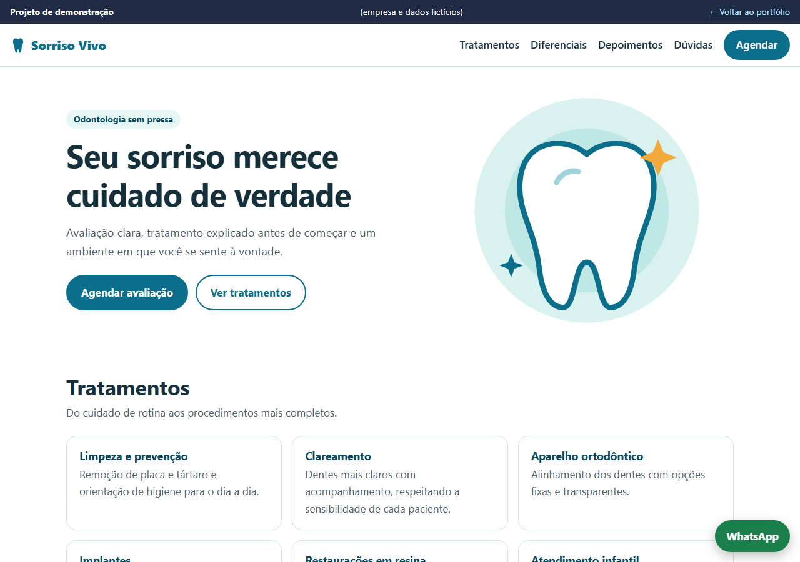

Projeto de demonstração
Landing page · Clínica Sorriso Vivo
- Problema
- Uma clínica precisa de uma página que explique os tratamentos e facilite o agendamento pelo celular.
- Solução
- Página responsiva com chamada principal, tratamentos, perguntas frequentes e formulário de agendamento.
- Tecnologias
- HTML, CSS e JavaScript, sem bibliotecas.